Typical Appearance
The appearance of a standard window varies across differentplatforms. Windows are made out of the following components:
- Frame 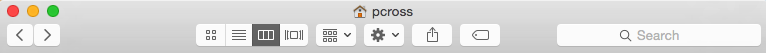 An example of the "Frame"
- Content 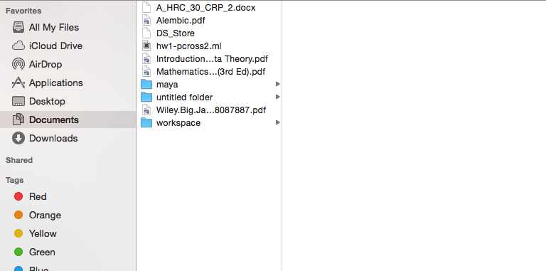 An example of the "Content"
In the frame there are buttons located on the top left corner or top right corner, depending on the platform. (See Platform Specific Content) There is a slight variation on the frame depending on what type of window one is accessing. (See the 'Variant Appearance' section below.) Generally in the middle of the frame, there is a title containing the name of the content.
The content component of the window, varies greatly and is dependent upon the type of window you are accessing. Depending on the platform one is using the frame might envelope the content and acting in a literal sense like a frame. See Platform Specific Content)

Variant Appearance
There are five common variants of windows.- File Explorer 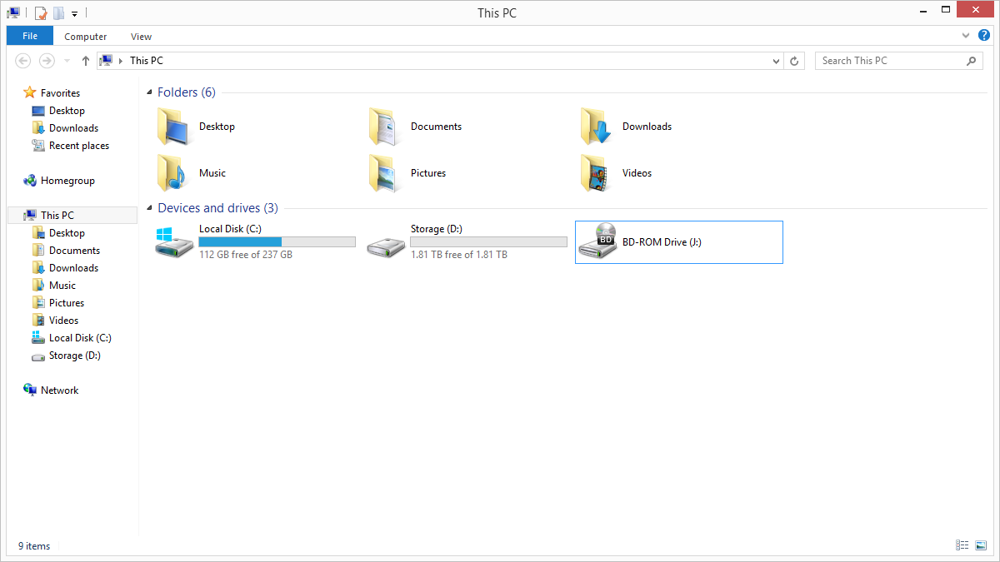
- Dialog 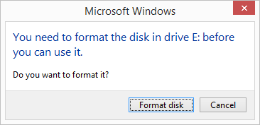
- Alert 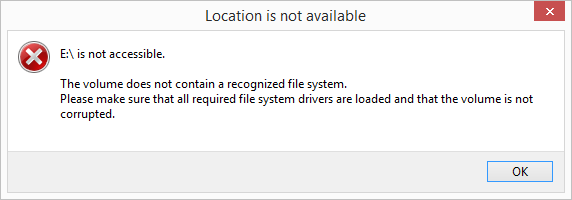
- Properties 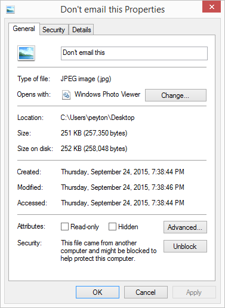
- Application 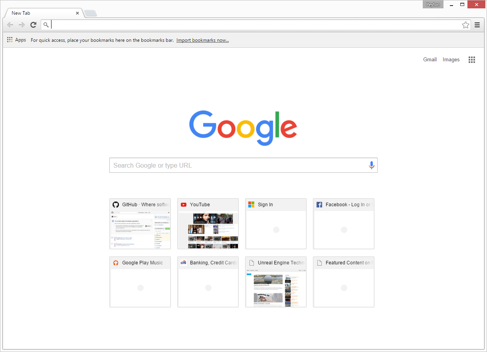
The file explorer window is usually accessed when one clicks a folder on their computer. There are three buttons located in the frame of the window. On most platforms you can change the layout of the content with buttons usually found in the frame.
The dialog window usually appears the computer prompts the user for input in the form of button or string input. In the frame there will either be one or no buttons depending on the platform.
The alert window occurs when the computer wants to notify the user of an action or a warning. It prompts the user for input in the form of a single button signaling that the user acknowledges the message. In its frame there will either be a single or no button.
The properties windows is usally accesed when one wants to edit the properties of a local file. The content of the window contains tabs that changes the content of the window. It also displays various information about the file.
Out of the four categories of windows, the appearance of an application windows varies greatly due to the nature of 3rd party developers. For most application windows they use the standard frame.
Typical Behavior
Events
The frame buttons
The three buttons in the frame exhibit three different behaviors.
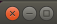- When the button to the outermost left is
clickedthe window closes. This is calledexitingthe window. - The button in the middle hides the window in the dock/menubar. This is called
minimizingthe window. The window can be accessed again by clicking it in within the dock/menu bar. This is calledrestoringthe window. - The button on the right
maximizesthe window, making the window's height and width the size of the screen. If clicked again the window will berestoredto it's original size
(For more info on the button component see button)
The frame
- If you click and hold the frame, you are able to move the window by dragging your mouse
- By double clicking the the frame you can expand or compress the size of the window. As to how big it varies from different platforms.
The window
- When one's mouse is at the edge of the window, the user is notified that the window can be resized. This is signified by the mouse changing its shape.
- When this happens if the user clicks and hold, by dragging the mouse one is able to change the size of the window precisely. (For more information see resizing)
State Diagram
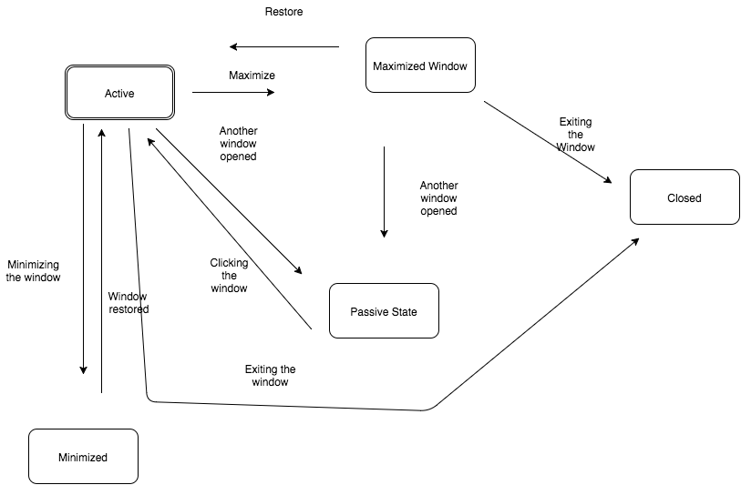The window component has five states:
activepassiveminimizedmaximizedclosed
When a window is opened it is in its active state by default. In this scenario we will call this window 1. In this state window 1's you are able to either maximize, minimize or exit the window.
When the window 1 is in its maximized state, the window expands to the size of ones computer monitor. Depending on the platform used a window can be minimized or exited in this state. By clicking the maximize button the user can restore the window to it's original size.
When the minimize button is clicked, window 1 enters minimized state. In this state the window disappears and it resides in the dock/menu bar. If you click the minimized window in the dock/menu bar it restores in size.
Lets assume the user opens up another window called window 2. When this happens window 1 is in it's passive state while window 2 would be in its active. The user is alerted to this change when window 1 appears to grayer than window 2.
If the user clicks window 1, then window 2 would become passive while window 1 would be active.
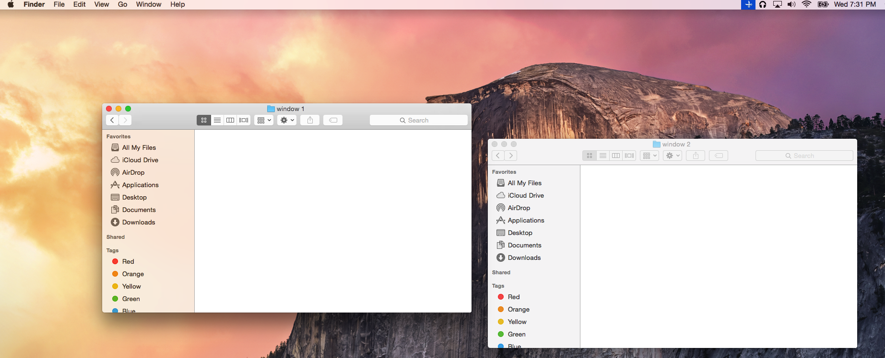If the user opens up another window, in which we will call window 3, both window 1 and window 2 will be in its passive state and window 3 will be in its active state.

When window 1 and window 2 are in its passive state, it acts like a background. In that window 3 and windows in a passive state can overlap with window 3 being on top.
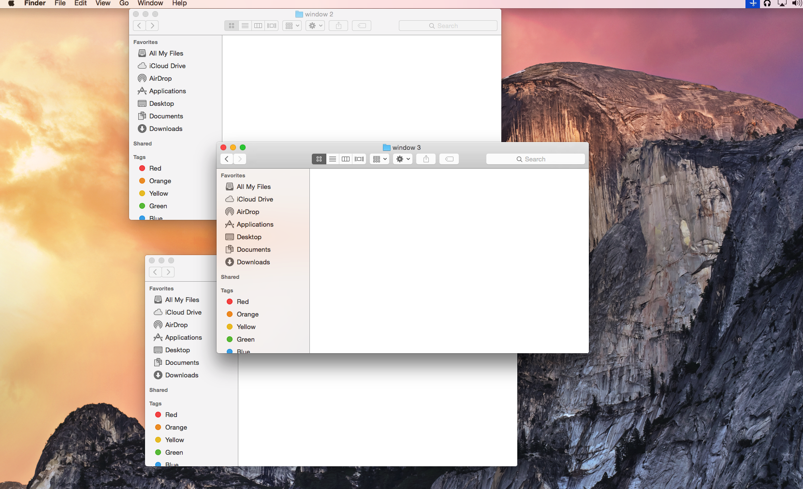Additional Behavior
File Explorer
Along with the events described in the above. In the frame of a File Explorer there is an option to search for files on your computer or folder. How this is implemented varies across platforms. (For more information please see the platform section below)
Included in the frame exists a back and foward button. When clicked The content of the window changes to the previously viewed content if the back button is clicked. And the foward button opens the content currently viewed.
In the content there exists a menu that allows quick access to directories. By clicking one of the options, the content of with window will change to the content of the directory shortcut you clicked. The directory shortcut menu is customizable.
Dialog
Unlike the File Explorer, Properties and Application windows, the Dialog window lacks a maximize button and a minimize button. Depending on the platform it may not even include an exit button.
Alert
Much like the dialog button, the Alert button lacks a maximize, minimize and possibly an exit button. However in contrast with the other types of windows when the Alert window is in its passive state it does not behave like a background. This window will always be on top of all windows.
Application
The most Application windows will behave as described above in the typical behavior sections as well as adopting to the nuinces of the platform.
Priority Metrics
As a common and fundamental component in modern graphic user interfaces, the window compoent mainly focuses on four out of the five usability metrics:
- Learnability A user seeing a window on any platform must not have any problems learning how it operates as it is the most common way to navigate through the computer's directory and to access files and to view content.
- Efficiency If a window delays, the user might make the mistake in trying to reopen the window. The result could be the opening of multiple windows. If this happens to be an Application window it could greatly slow down the computer.
- Errors A user must not trigger an error with a window. This is especially so with an application window. The error could cause the user's work to be deleted.
- Memorability Because a window is an important graphic user interface component, it would be tedious and counter-productive if the user is unable to remember how to use the component
The last metric, satisfaction, is the least important because of window's commonality and simplicity. Not much pleasure can be derived from the functionality of a window.
Key Characteristics
Clarity
There should be a title in the middle of the frame in order for the user to get a better understanding of the content being displayed. For a dialog and alert window it is extremely important for the message to be concise and easily understandable.
Consistency
This mainly applies to Application windows. The Application window should adopt the stylings and appearance of a typical window of the specific platform it is running on.
Feedback
There should be some kind of response indicating that a user is opening a window. If there is such a delay the user could accidently open various windows. For application windows there should be confirmation if the user would like to close a window in the form of a dialog window. This is especially the case if the user is modifying a file in the content of a window.
Platform Specific Content and Differences
Below are a selection of Platforms that describe exclusive window behavior and appearance
OS X Yosemite
According to the OS X Human Interface Guidelines, a window provides a frame for viewing and interacting with content in an app.
General Differences
There are a few cosmetic differences in the layout of a window. The three buttons that allow the window to Maximize, Minimize and Close are placed on the left of the frame. Along with the title displayed in the middle of the frame there is also an icon frequently shown to the left of it.
In OSX Yosemite when the window is maximized it envelopes the whole screen including the top menu.

Categorial Differences
- File Explorer
- There are several buttons in the frame that changes the view of files
- The frame contains an input text search bar.
- The content of the window contains options for tags.
- Dialog
- The three buttons to modify the window state are gone.
- Alert
- No options exist to modify the window state are gone
- Properties
- There are drop down menues within the properties window to modify the file
Windows 8.1
According to Microsoft’s Windows User Experience Interaction Guidelines windows are the main "canvases" or UI surfaces of your desktop app, including the main windows itself and pop-ups, dialogs, and wizards.
General Differences
In windows 8.1 the three buttons to maximize, minimize and to close the window is placed in the frame at the right corner. Unlike Yosemite and Ubuntu, the frame encapsulates the content of the window.
When maximized the window does not fully fill up the entire screen. It also leaves room for the taskbar at the bottom. In it maximum state, it is also possible to minimize the window.

Categorial Differences
- File Explorer
- In the frame there is an address bar that allows the user to navigate through the directory by entering an address
- The frame contains an input text search bar.
- There are three tabs named
FileComputerandView
- Dialog
- The user is able to exit the dialog window through the frame button
- Alert
- The user is able to exit the dialog window through the frame button
- Properties
- There are several tabs that allows the user to modify and view information of the selected file.
Windows 10
Ubuntu 15
Ubuntu is an open source software platform with many contributers. There is no specific guideline on design. Compared to other platforms its Windows component greatly resembles Mac OSX platforms.
General Differences
Like Yosemite, Ubuntu places the buttons in the frame on the top left corner. In its maximized state, it expands to cover the whole screen except for task bar.
When maximized the window does not fully fill up the entire screen. It also leaves room for the taskbar at the bottom. In it maximum state, it is also possible to minimize the window.

Categorial Differences
- File Explorer
- In the frame there are buttons labeling the parent directory of the current directy you are in
- The frame also contains a search button. When clicked a search text input appears and allows you to search files within the computer.
- Dialog
- The user is able to exit the dialog window through the frame button
- Alert
- The user is able to exit the dialog window through the frame button
- Properties
- There are several tabs that allows the user to modify and view information of the selected file.
Android 6.0.1 Marshmallow
According to Google, "Attention to detail makes an app truly beautiful: transitions are fast and clear, layout and typography are crisp and meaningful, and design touches that delight you in surprising ways are sprinkled throughout."
Distinguishing Characteristics
Given that Android is a mobile software platform, windows in Android have no obvious visual based interactions like Windows, OSX, and Ubuntu do with their three buttons for closing, maximizing, and minimizing. Rather, a window of an application can be opened by starting up that application from the home screen, and it can be closed by pressing the home button on the particular device, whether it be a soft or hard key. More often than not the entire display is taken up by a single window; unlike Windows, OSX, and Ubuntu which allow multiple windows to coexist on the same display.
Windows in Android have a general structure, layout, and function that can be found throughout almost every application the device may host. For example, the Information Bar at the top of an Android device's screen is present in every application window. This bar includes always relevant information such as mobile network connection status, battery indicator, time, and others as users may deem fit (e.g. alarms, bluetooth, etc.).
Figure A.1
A hidden necessity of the constant presence of this notification bar is the Notification and Quick Settings Bar that it expands into. The series of screenshots below shows the progression of pulling down the Bar, starting with touching the Information Bar and proceeding with pulling towards the bottom of the display.
Figure A.2.1
Figure A.2.2
Figure A.2.3
Figure A.2.4
The first part of the Bar that shows up is a more detailed display of the time and date, along with a symbol that suggests settings and an expansion of some sort. Pulling down a little further reveals the Quick Settings Bar. One thing that may be a little misleading is that this is not far enough for the entire Bar to push itself onto the display. If released at this point, it recedes to the top of the screen leaving behind the Information Bar. It is only after the entire Bar has been pulled down past the halfway point on the display that it will slide down and cover the screen, allowing interaction (See Figure A.3.3).
There are a few different functionalities that present themselves with the presence of the Notification and Quick Settings Bar. First, the Quick Settings at the top. These tend to be the settings most often changed and/or interacted with by users (and are customizable by users). The first five are obvious, but users can also swipe to the left to reveal multiple other settings. The one other way to access the rest of the Quick Settings is to press the carrot at the top right revealed in Figure A.3.1. This leads into the appearance presented in Figure A.3.4.
The second obvious functionality of the Notification and Quick Settings Bar is, in fact, the presence of notifications. Notifications are presented in small rectangular form consisting of an icon on the left of the application they are from and a small description. Notifications may either be swiped away (to the left or right) to dismiss them (See Figure A.3.2), or pressed to activate the related application and more often than not in a way that addresses the notification. For example, in the case of receiving a text message, pressing the notification opens the Messenger application to the conversation (See Figures A.3.3 and A.3.4).
Figure A.3.1
Figure A.3.2
Figure A.3.3
Figure A.3.4
Certain applications have a permanent presence in the Notification Bar when in use (i.e. they cannot be dismissed, only activated). The "Spotify" and "Twilight" applications in Figure A.4 below have such a presence.
Figure A.4
Another common component of Android application windows are how menus are presented. Generally, a menu presents its existence in the form of a column of three horizontal lines or dots in the top left or right corner of the display.
Figure A.5.1
Figure A.5.1
Figure A.5.1
These menus often have a similar structure in terms of how they and their options are displayed. Often a secondary panel slides onto the screen in a way to suggest that it is on top of the main window. Here, options are portrayed in a list fashion justified towards the outer side of the window.
Figure A.6.1
Figure A.6.2
Figure A.6.3
A different form of menu is a series of categories listed across the top part of the display just beneath title bar or something similar.
Figure A.7.1
Figure A.7.2
Figure A.7.3
Figure A.8.1
Figure A.8.2
Figure A.8.3
Although it is reserved for certain situations, another main component of windows in Android is the keyboard. Granted, it only appears when the user is ready to enter text, it does take a substantial amount of display room when in use, both in portrait and landscape mode (See Figure A.9.1 and A.9.2)
Figure A.9.1
Figure A.9.2
The main content of the application window takes up a majority of the display most of the time. Depending on the type of application, the window may be able to be navigated by scrolling, panning, or zooming. In the case of an application that presents a list or feed structure (e.g. Settings, Facebook, Reddit Is Fun), one can only scroll up and down the window. In an application that presents a page however, such as Google Chrome, one can zoom in and out of the page and also navigate the page more precisely through panning at a closer zoom. The one caveat to this is, at least for Google Chrome, many websites have a mobile version that present themselves in a feed fashion, restricting them to not being able to be panned over or zoomed into. Desktop versions of these websites however do generally allow for more freedom of navigation.
Figure A.10.1
Figure A.10.2
Figure A.10.3
Figure A.10.4
A certain unique type of window that is also prevalent is a window that contains media, either video or audio. These windows don't necessarily have the default characteristics of windows, such as the Information Bar which is hidden when a fullscreen video is being played. The screenshots below show how a fullscreen video is presented on the YouTube application. Again, the Information Bar is hidden in this window. A swipe down from the top reveals the Bar (See Figure A.11.2) which can then be pulled down to show the Notification and Quick Settings Bar. Also, tapping on the screen brings up the video control interface which includes play/pause, next/previous video, and a scrub bar (See Figure A.11.3).
Figure A.11.1
Figure A.11.2
Figure A.11.3
The biggest difference between different video applications is the control interface. Below are additional examples from Samsung's default Video Player application and the build in Android video interface.
Figure A.12.1
Figure A.12.2
One other specialty that Android devices have in viewing videos, is that they have the capability of "popping" videos out of their rigid frames and displaying them on top of others (as seen below).
Figure A.13
Another exception to the fact that every application has one window that occupies the entire display at a time, is Android's capability of Multi-Window Support. "On handheld devices, two apps can run side-by-side or one-above-the-other in split-screen mode. For example, a user could split the screen, viewing a web page on the left side while composing an email on the right side." An example can be seen below where both the Google Chrome and Google Maps applications are concurrently open on the display next to each other.
Since Android is a mobile software platform, it has no guidelines on windows as each application takes up the entire screen. There do exist guidelines for Multi-Window support however.
Figure A.14
This split screen interface has unique controls not present in situations with only one window. First, the application currently in use and active is indicated as such with a blue border. The white dot along the dividing line between the applications allows the user to adjust how much display real estate is dedicated to either application. Tapping on this circle rather than dragging it reveals a small set of menu items. These include being able to make the active application full screen and eliminate the inactive application's place on the screen, switch the positions of the applications, quit the active application allowing the inactive to take up the whole display, etc.
Figure A.15.1
Figure A.15.2